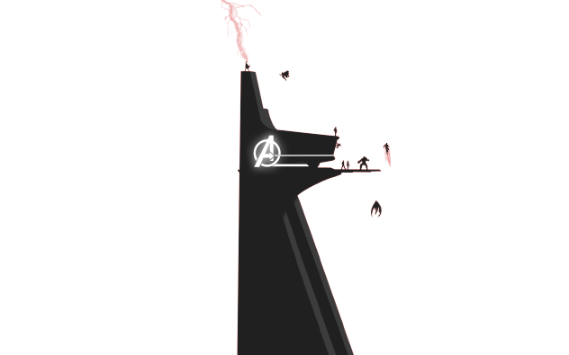
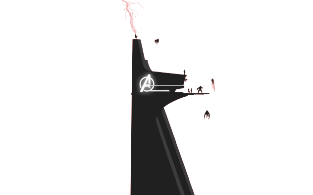

Avengers.
The Real Super-heroes.


Stan Lee was an American comic-book writer, editor, and publisher, who was executive vice president and publisher of Marvel Comics. Stan was born in New York City, to Celia (Solomon) and Jack Lieber, a dress cutter. His parents were Romanian Jewish immigrants.
Spider-Man is a superhero appearing in American comic books published by Marvel Comics. Created by writer-editor Stan Lee and artist Steve Ditko, he first appeared in the anthology comic book Amazing Fantasy #15 (August 1962) in the Silver Age of Comic Books.
Iron Man is a superhero appearing in American comic books published by Marvel Comics. The character was co-created by writer and editor Stan Lee, developed by scripter Larry Lieber, and designed by artists Don Heck and Jack Kirby. The character made his first appearance in Tales of Suspense #39 (cover dated March 1963), and received his own title in Iron Man #1.
Thor Odinson, usually simply Thor, is a fictional character appearing in American comic books published by Marvel Comics. The character is based on the Norse mythological god of the same name, the Asgardian god of thunder whose enchanted hammer Mjolnir enables him to fly and manipulate weather, among his other superhuman attributes. A founding member of the superhero team the Avengers, Thor has a host of supporting characters and enemies.
The Hulk is a superhero appearing in publications by the American publisher Marvel Comics. Created by writer Stan Lee and artist Jack Kirby, the character first appeared in the debut issue of The Incredible Hulk (May 1962). In his comic book appearances, the character, who has dissociative identity disorder (DID), is primarily represented by the alter ego Hulk, a green-skinned, hulking and muscular humanoid possessing a limitless degree of physical strength, and the alter ego Dr. Robert Bruce Banner, a physically weak, socially withdrawn, and emotionally reserved physicist, both of whom typically resent each other.
Captain America is a superhero appearing in American comic books published by Marvel Comics. Created by cartoonists Joe Simon and Jack Kirby, the character first appeared in Captain America Comics #1 (cover dated March 1941) from Timely Comics, a predecessor of Marvel Comics.